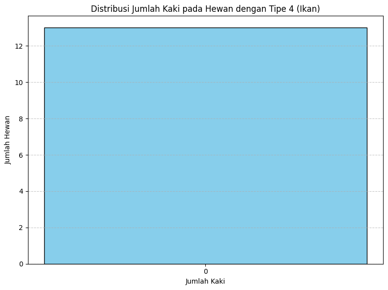
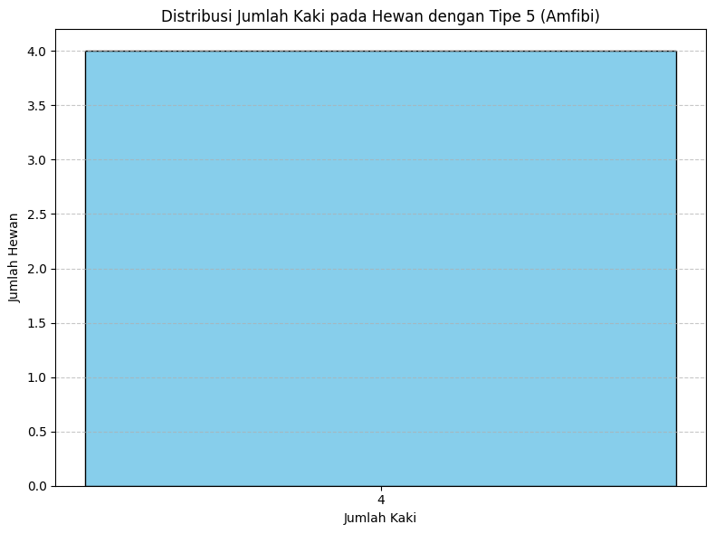
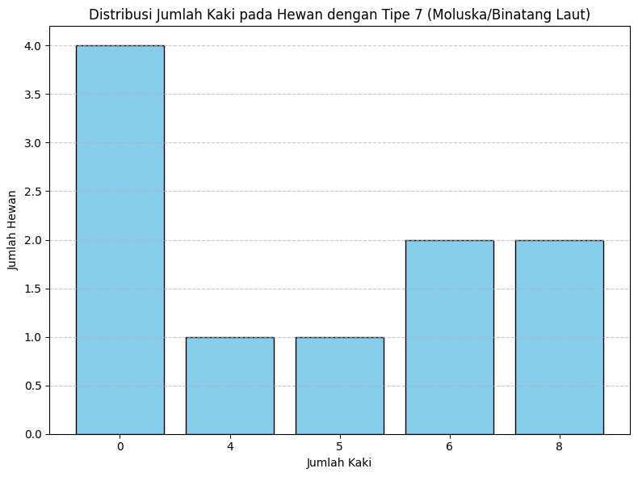
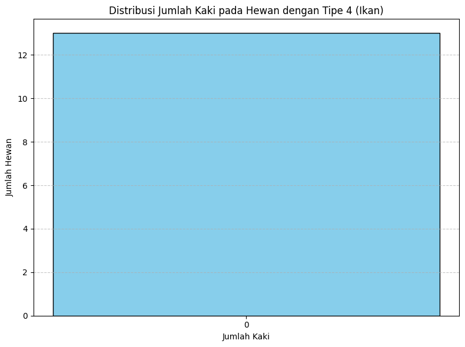
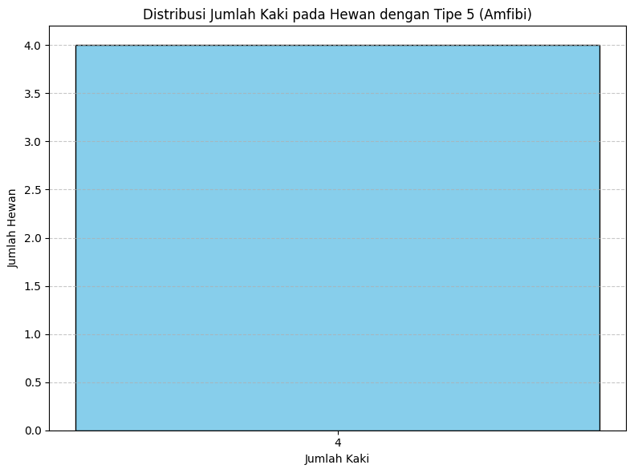
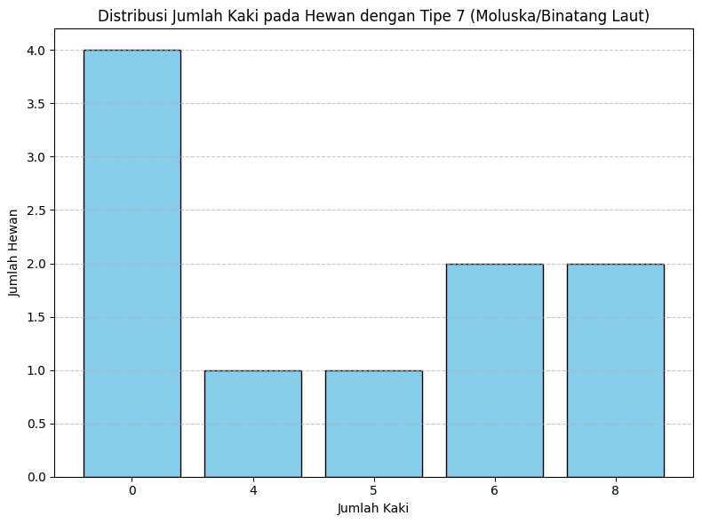

Zoo#
Business Understanding#
Tujuan utama dari proyek ini adalah mengembangkan model klasifikasi untuk mengidentifikasi kategori hewan berdasarkan fitur fitur yang ada. Hasil dari model ini dapat digunakan untuk beberapa hal seperti:
Membantu ahli biologi atau peneliti dalam mengidentifikasi hewan
Menyediakan alat untuk mengidentifikasi hewan sesuai spesies dan klasifikasinya
Data Understanding#
Dataset yang saya gunakan yaitu data Zoo dari website UCI Machine Learning. Data ini merupakan sebuah dataset sederhana untuk mengklasifikasikan hewan berdasarkan 17 atribut bertipe boolean dan 1 atribut numerik. Dataset yang digunakan memiliki 101 data.
Penjelasan atribut#
Berikut ini adalah penjelasan atribut atribut yang digunakan
Hair = Rambut (Boolean)
0 = Tidak
1 = Ya
Feathers = Bulu (Boolean)
0 = Tidak
1 = Ya
Eggs = Bertelur (Boolean)
0 = Tidak
1 = Ya
Milk = Menyusui (Boolean)
0 = Tidak
1 = Ya
Airbone = Mengudara (Boolean)
0 = Tidak
1 = Ya
Aquatic = Akuatik (Boolean)
0 = Tidak
1 = Ya
Predator = Predator (Boolean)
0 = Tidak
1 = Ya
Toothed = Bergigi (Boolean)
0 = Tidak
1 = Ya
Backbone = Tulang belakang (Boolean)
0 = Tidak
1 = Ya
Breathes = Bernafas (Boolean)
0 = Tidak
1 = Ya
Venomous = Beracun (Boolean)
0 = Tidak
1 = Ya
Fins = Sirip (Boolean)
0 = Tidak
1 = Ya
Legs = Kaki (Numerical)
0 , 1 , 2 , 3, 4 , 5 , 6 , 7 , 8 dst
Tail = Berekor (Boolean)
0 = Tidak
1 = Ya
Domestic = Jinak (Boolean)
0 = Tidak
1 = Ya
Catsize = Ukuran kucing (Boolean)
0 = Tidak
1 = Ya
Data Preparation#
Library uci machine learning#
!pip install ucimlrepo
Collecting ucimlrepo
Downloading ucimlrepo-0.0.3-py3-none-any.whl (7.0 kB)
Installing collected packages: ucimlrepo
Successfully installed ucimlrepo-0.0.3
import matplotlib.pyplot as plt
import pandas as pd
import seaborn as sns
import numpy as np
Install dataset Zoo otomatis#
Penginstallan dataset zoo ini menggunakan X sebagai data fitur dan y sebagai target. Data yang dipakai tidak memiliki missing values sehingga bisa lanjut ke tahap preprocessing selanjutnya
from ucimlrepo import fetch_ucirepo
# fetch dataset
zoo = fetch_ucirepo(id=111)
# data (as pandas dataframes)
X = zoo.data.features
y = zoo.data.targets
# metadata
print(zoo.metadata)
# variable information
print(zoo.variables)
{'uci_id': 111, 'name': 'Zoo', 'repository_url': 'https://archive.ics.uci.edu/dataset/111/zoo', 'data_url': 'https://archive.ics.uci.edu/static/public/111/data.csv', 'abstract': 'Artificial, 7 classes of animals', 'area': 'Biology', 'tasks': ['Classification'], 'characteristics': ['Multivariate'], 'num_instances': 101, 'num_features': 16, 'feature_types': ['Categorical', 'Integer'], 'demographics': [], 'target_col': ['type'], 'index_col': ['animal_name'], 'has_missing_values': 'no', 'missing_values_symbol': None, 'year_of_dataset_creation': 1990, 'last_updated': 'Fri Sep 15 2023', 'dataset_doi': '10.24432/C5R59V', 'creators': ['Richard Forsyth'], 'intro_paper': None, 'additional_info': {'summary': 'A simple database containing 17 Boolean-valued attributes. The "type" attribute appears to be the class attribute. Here is a breakdown of which animals are in which type: (I find it unusual that there are 2 instances of "frog" and one of "girl"!)', 'purpose': None, 'funded_by': None, 'instances_represent': None, 'recommended_data_splits': None, 'sensitive_data': None, 'preprocessing_description': None, 'variable_info': ' 1. animal name: Unique for each instance\r\n 2. hair:\t\tBoolean\r\n 3. feathers:\t\tBoolean\r\n 4. eggs:\t\tBoolean\r\n 5. milk:\t\tBoolean\r\n 6. airborne:\t\tBoolean\r\n 7. aquatic:\t\tBoolean\r\n 8. predator:\t\tBoolean\r\n 9. toothed:\t\tBoolean\r\n 10. backbone:\t\tBoolean\r\n 11. breathes:\t\tBoolean\r\n 12. venomous:\t\tBoolean\r\n 13. fins:\t\tBoolean\r\n 14. legs:\t\tNumeric (set of values: {0,2,4,5,6,8})\r\n 15. tail:\t\tBoolean\r\n 16. domestic:\t\tBoolean\r\n 17. catsize:\t\tBoolean\r\n 18. type:\t\tNumeric (integer values in range [1,7])', 'citation': None}}
name role type demographic description units \
0 animal_name ID Categorical None None None
1 hair Feature Binary None None None
2 feathers Feature Binary None None None
3 eggs Feature Binary None None None
4 milk Feature Binary None None None
5 airborne Feature Binary None None None
6 aquatic Feature Binary None None None
7 predator Feature Binary None None None
8 toothed Feature Binary None None None
9 backbone Feature Binary None None None
10 breathes Feature Binary None None None
11 venomous Feature Binary None None None
12 fins Feature Binary None None None
13 legs Feature Categorical None None None
14 tail Feature Binary None None None
15 domestic Feature Binary None None None
16 catsize Feature Binary None None None
17 type Target Categorical None None None
missing_values
0 no
1 no
2 no
3 no
4 no
5 no
6 no
7 no
8 no
9 no
10 no
11 no
12 no
13 no
14 no
15 no
16 no
17 no
# URL dataset Abalone di UCI Repository
url = "https://archive.ics.uci.edu/ml/machine-learning-databases/zoo/zoo.data"
# Mengimpor data ke dalam pandas DataFrame
df = pd.read_csv(url, header=None, names=["animal_name", "hair", "feathers", "eggs", "milk", "airborne", "aquatic", "predator", "toothed","backbone","breathes","venomous","fins","legs","tail","domestic","catsize","type"])
# Menampilkan DataFrame
df
| animal_name | hair | feathers | eggs | milk | airborne | aquatic | predator | toothed | backbone | breathes | venomous | fins | legs | tail | domestic | catsize | type | |
|---|---|---|---|---|---|---|---|---|---|---|---|---|---|---|---|---|---|---|
| 0 | aardvark | 1 | 0 | 0 | 1 | 0 | 0 | 1 | 1 | 1 | 1 | 0 | 0 | 4 | 0 | 0 | 1 | 1 |
| 1 | antelope | 1 | 0 | 0 | 1 | 0 | 0 | 0 | 1 | 1 | 1 | 0 | 0 | 4 | 1 | 0 | 1 | 1 |
| 2 | bass | 0 | 0 | 1 | 0 | 0 | 1 | 1 | 1 | 1 | 0 | 0 | 1 | 0 | 1 | 0 | 0 | 4 |
| 3 | bear | 1 | 0 | 0 | 1 | 0 | 0 | 1 | 1 | 1 | 1 | 0 | 0 | 4 | 0 | 0 | 1 | 1 |
| 4 | boar | 1 | 0 | 0 | 1 | 0 | 0 | 1 | 1 | 1 | 1 | 0 | 0 | 4 | 1 | 0 | 1 | 1 |
| ... | ... | ... | ... | ... | ... | ... | ... | ... | ... | ... | ... | ... | ... | ... | ... | ... | ... | ... |
| 96 | wallaby | 1 | 0 | 0 | 1 | 0 | 0 | 0 | 1 | 1 | 1 | 0 | 0 | 2 | 1 | 0 | 1 | 1 |
| 97 | wasp | 1 | 0 | 1 | 0 | 1 | 0 | 0 | 0 | 0 | 1 | 1 | 0 | 6 | 0 | 0 | 0 | 6 |
| 98 | wolf | 1 | 0 | 0 | 1 | 0 | 0 | 1 | 1 | 1 | 1 | 0 | 0 | 4 | 1 | 0 | 1 | 1 |
| 99 | worm | 0 | 0 | 1 | 0 | 0 | 0 | 0 | 0 | 0 | 1 | 0 | 0 | 0 | 0 | 0 | 0 | 7 |
| 100 | wren | 0 | 1 | 1 | 0 | 1 | 0 | 0 | 0 | 1 | 1 | 0 | 0 | 2 | 1 | 0 | 0 | 2 |
101 rows × 18 columns
Install dataset Zoo Manual#
Adanya penginstalan dataset manual dilakukan karena terkadang website UCI Machine Learning mengalami error sehinga memiliki cara kedua untuk menggunakan datasetnya.
import pandas as pd
# Path ke file-file dataset
index_path = '/content/drive/MyDrive/PSD/Zoo/dataset/Index'
data_path = '/content/drive/MyDrive/PSD/Zoo/dataset/zoo.data'
names_path = '/content/drive/MyDrive/PSD/Zoo/dataset/zoo.names'
# Membaca file data dan memberi nama kolom sesuai dengan dataset
df = pd.read_csv(data_path, header=None, names=["animal_name", "hair", "feathers", "eggs", "milk", "airborne", "aquatic", "predator", "toothed", "backbone", "breathes", "venomous", "fins", "legs", "tail", "domestic", "catsize", "type"])
# Menampilkan nama-nama kolom
print(df.columns)
# Memastikan nama kolom target yang benar
target_column_name = "type"
# Memisahkan fitur (X) dan target (y)
X = df.drop(columns=["animal_name", target_column_name])
y = df[target_column_name]
# Menampilkan DataFrame
print(X)
print(y)
Index(['animal_name', 'hair', 'feathers', 'eggs', 'milk', 'airborne',
'aquatic', 'predator', 'toothed', 'backbone', 'breathes', 'venomous',
'fins', 'legs', 'tail', 'domestic', 'catsize', 'type'],
dtype='object')
hair feathers eggs milk airborne aquatic predator toothed \
0 1 0 0 1 0 0 1 1
1 1 0 0 1 0 0 0 1
2 0 0 1 0 0 1 1 1
3 1 0 0 1 0 0 1 1
4 1 0 0 1 0 0 1 1
.. ... ... ... ... ... ... ... ...
96 1 0 0 1 0 0 0 1
97 1 0 1 0 1 0 0 0
98 1 0 0 1 0 0 1 1
99 0 0 1 0 0 0 0 0
100 0 1 1 0 1 0 0 0
backbone breathes venomous fins legs tail domestic catsize
0 1 1 0 0 4 0 0 1
1 1 1 0 0 4 1 0 1
2 1 0 0 1 0 1 0 0
3 1 1 0 0 4 0 0 1
4 1 1 0 0 4 1 0 1
.. ... ... ... ... ... ... ... ...
96 1 1 0 0 2 1 0 1
97 0 1 1 0 6 0 0 0
98 1 1 0 0 4 1 0 1
99 0 1 0 0 0 0 0 0
100 1 1 0 0 2 1 0 0
[101 rows x 16 columns]
0 1
1 1
2 4
3 1
4 1
..
96 1
97 6
98 1
99 7
100 2
Name: type, Length: 101, dtype: int64
df
| animal_name | hair | feathers | eggs | milk | airborne | aquatic | predator | toothed | backbone | breathes | venomous | fins | legs | tail | domestic | catsize | type | |
|---|---|---|---|---|---|---|---|---|---|---|---|---|---|---|---|---|---|---|
| 0 | aardvark | 1 | 0 | 0 | 1 | 0 | 0 | 1 | 1 | 1 | 1 | 0 | 0 | 4 | 0 | 0 | 1 | 1 |
| 1 | antelope | 1 | 0 | 0 | 1 | 0 | 0 | 0 | 1 | 1 | 1 | 0 | 0 | 4 | 1 | 0 | 1 | 1 |
| 2 | bass | 0 | 0 | 1 | 0 | 0 | 1 | 1 | 1 | 1 | 0 | 0 | 1 | 0 | 1 | 0 | 0 | 4 |
| 3 | bear | 1 | 0 | 0 | 1 | 0 | 0 | 1 | 1 | 1 | 1 | 0 | 0 | 4 | 0 | 0 | 1 | 1 |
| 4 | boar | 1 | 0 | 0 | 1 | 0 | 0 | 1 | 1 | 1 | 1 | 0 | 0 | 4 | 1 | 0 | 1 | 1 |
| ... | ... | ... | ... | ... | ... | ... | ... | ... | ... | ... | ... | ... | ... | ... | ... | ... | ... | ... |
| 96 | wallaby | 1 | 0 | 0 | 1 | 0 | 0 | 0 | 1 | 1 | 1 | 0 | 0 | 2 | 1 | 0 | 1 | 1 |
| 97 | wasp | 1 | 0 | 1 | 0 | 1 | 0 | 0 | 0 | 0 | 1 | 1 | 0 | 6 | 0 | 0 | 0 | 6 |
| 98 | wolf | 1 | 0 | 0 | 1 | 0 | 0 | 1 | 1 | 1 | 1 | 0 | 0 | 4 | 1 | 0 | 1 | 1 |
| 99 | worm | 0 | 0 | 1 | 0 | 0 | 0 | 0 | 0 | 0 | 1 | 0 | 0 | 0 | 0 | 0 | 0 | 7 |
| 100 | wren | 0 | 1 | 1 | 0 | 1 | 0 | 0 | 0 | 1 | 1 | 0 | 0 | 2 | 1 | 0 | 0 | 2 |
101 rows × 18 columns
Simpan ke CSV
df.to_csv('datazoo.csv')
Mapping kelas hewan#
Kode dibawah ini dilakukan untuk mengetahui hewan apa saja dan berapa jumlah setiap hewan di kelompok nya masing masing (berdasarkan tipe)
# Kelompokkan data berdasarkan kolom 'type'
grouped_data = df.groupby('type')
# Dictionary untuk mapping tipe ke kategori
type_categories = {
1: 'Mamalia',
2: 'Burung/Unggas',
3: 'Reptil',
4: 'Ikan',
5: 'Amfibi',
6: 'Serangga',
7: 'Moluska/Binatang laut'
}
# Iterasi melalui setiap tipe dan mencetak jumlah baris dan nama binatang untuk setiap tipe
for group, data in grouped_data:
animal_names = data['animal_name'].unique() # Ambil nama binatang unik untuk tipe ini
category = type_categories[group] # Ambil kategori tipe dari dictionary
print(f"Kelas {group} ({category}) - Jumlah: {data.shape},\nNama binatang: {animal_names}\n")
Kelas 1 (Mamalia) - Jumlah: (41, 18),
Nama binatang: ['aardvark' 'antelope' 'bear' 'boar' 'buffalo' 'calf' 'cavy' 'cheetah'
'deer' 'dolphin' 'elephant' 'fruitbat' 'giraffe' 'girl' 'goat' 'gorilla'
'hamster' 'hare' 'leopard' 'lion' 'lynx' 'mink' 'mole' 'mongoose'
'opossum' 'oryx' 'platypus' 'polecat' 'pony' 'porpoise' 'puma' 'pussycat'
'raccoon' 'reindeer' 'seal' 'sealion' 'squirrel' 'vampire' 'vole'
'wallaby' 'wolf']
Kelas 2 (Burung/Unggas) - Jumlah: (20, 18),
Nama binatang: ['chicken' 'crow' 'dove' 'duck' 'flamingo' 'gull' 'hawk' 'kiwi' 'lark'
'ostrich' 'parakeet' 'penguin' 'pheasant' 'rhea' 'skimmer' 'skua'
'sparrow' 'swan' 'vulture' 'wren']
Kelas 3 (Reptil) - Jumlah: (5, 18),
Nama binatang: ['pitviper' 'seasnake' 'slowworm' 'tortoise' 'tuatara']
Kelas 4 (Ikan) - Jumlah: (13, 18),
Nama binatang: ['bass' 'carp' 'catfish' 'chub' 'dogfish' 'haddock' 'herring' 'pike'
'piranha' 'seahorse' 'sole' 'stingray' 'tuna']
Kelas 5 (Amfibi) - Jumlah: (4, 18),
Nama binatang: ['frog' 'newt' 'toad']
Kelas 6 (Serangga) - Jumlah: (8, 18),
Nama binatang: ['flea' 'gnat' 'honeybee' 'housefly' 'ladybird' 'moth' 'termite' 'wasp']
Kelas 7 (Moluska/Binatang laut) - Jumlah: (10, 18),
Nama binatang: ['clam' 'crab' 'crayfish' 'lobster' 'octopus' 'scorpion' 'seawasp' 'slug'
'starfish' 'worm']
Rata rata distribusi fitur pada keseluruhan hewan (Kategorikal/Boolean)#
Kode ini digunakan untuk melihat fitur apa saja yang sering muncul pada setiap hewan yang ada di tipe kategorikal
# Menghitung jumlah hewan dalam tipe tersebut yang memiliki nilai setiap fitur
fitur_counts = df.drop(columns=['type', 'animal_name']).apply(lambda x: x.value_counts()).T
# Membuat diagram batang dengan tipe yang mirip dengan histogram
plt.figure(figsize=(12, 6))
bar_width = 0.35
bar_colors = ['skyblue'] * len(fitur_counts.index) # Menggunakan warna sky blue untuk semua batang
bar_positions = np.arange(len(fitur_counts.index))
# Menggunakan indeks fitur_counts sebagai label sumbu x
plt.bar(bar_positions, fitur_counts[1], bar_width, color=bar_colors, label='Nilai 1')
plt.bar(bar_positions, fitur_counts[0], bar_width, color='lightgray', label='Nilai 0', bottom=fitur_counts[1])
# Menggunakan indeks fitur_counts sebagai label sumbu x
plt.xlabel('Fitur Hewan')
plt.ylabel('Jumlah Hewan')
plt.title(f'Distribusi Fitur pada Hewan')
plt.xticks(bar_positions, fitur_counts.index, rotation=45)
plt.legend()
plt.tight_layout()
plt.show()
Terlihat fitur yang mendominasi di tipe kategorikal terdapat pada backbone atau hewan bertulang belakang sekitar 80, breathes atau hewan yang bernafas sekitar 80 juga dan juga tail yaitu hewan yang memiliki ekor sekitar 75 keatas
Rata rata distribusi fitur pada keseluruhan hewan (Numerik)#
# Menghitung jumlah hewan dengan nilai legs tertentu
legs_counts = df['legs'].value_counts().sort_index()
# Membuat diagram garis untuk distribusi jumlah hewan berdasarkan jumlah kaki (legs)
plt.figure(figsize=(8, 6))
plt.plot(legs_counts.index, legs_counts.values, marker='o', color='skyblue', linestyle='-', linewidth=2, markersize=8)
plt.xlabel('Jumlah Kaki')
plt.ylabel('Jumlah Hewan')
plt.title('Distribusi Jumlah Kaki pada Hewan')
plt.xticks(legs_counts.index)
plt.grid(axis='y', linestyle='--', alpha=0.7)
# Menambahkan label jumlah hewan pada setiap titik pada diagram
for i, count in enumerate(legs_counts.values):
plt.text(legs_counts.index[i], count, str(count), ha='center', va='bottom')
plt.tight_layout()
plt.show()
Pada distribusi kaki ini, terlihat bahwa data dominan dengan hewan berkaki 4 berjumlah 38 hewan dan data yang paling sedikit yaitu hewan yang berkaki 5 yang hanya berjumlah 1
Distribusi Fitur tanpa kaki/legs#
Melihat fitur yang ada pada setiap tipe hewan tanpa label legs(Numerik)
import numpy as np
import matplotlib.pyplot as plt
# Menghitung jumlah tipe yang ada (1 sampai 7)
types = np.arange(1, 8)
# Dictionary untuk mapping tipe ke nama
tipe_to_nama = {
1: "Mamalia",
2: "Burung/Unggas",
3: "Reptil",
4: "Ikan",
5: "Amfibi",
6: "Serangga",
7: "Moluska/Binatang Laut"
}
# Melakukan perulangan untuk setiap tipe
for tipe in types:
# Memfilter hanya baris dengan tipe tertentu
filtered_data = df[df['type'] == tipe]
# Menghitung jumlah hewan dalam tipe tersebut
jumlah_hewan = len(filtered_data)
# Menghitung jumlah hewan dalam tipe tersebut yang memiliki nilai setiap fitur
fitur_counts = filtered_data.drop(columns=['type', 'animal_name', 'legs']).apply(lambda x: x.value_counts()).T
# Membuat diagram batang
plt.figure(figsize=(12, 6))
bar_width = 0.35
bar_colors = ['skyblue'] * len(fitur_counts.index) # Menggunakan warna sky blue untuk semua batang
bar_positions = np.arange(len(fitur_counts.index))
plt.bar(bar_positions, fitur_counts[1], bar_width, color=bar_colors, label='Nilai 1')
plt.bar(bar_positions, fitur_counts[0], bar_width, color='lightgray', label='Nilai 0', bottom=fitur_counts[1])
plt.xlabel('Nama Fitur')
plt.ylabel('Jumlah Hewan')
plt.title(f'Distribusi Fitur pada Hewan dengan Tipe {tipe} ({tipe_to_nama[tipe]}) - Jumlah Hewan: {jumlah_hewan}') # Menambahkan jumlah hewan pada judul
plt.xticks(bar_positions, fitur_counts.index, rotation=45)
plt.legend()
plt.tight_layout()
plt.show()
Sedikit kesimpulan yang dapat diambil dari grafik diatas setiap tipe
Tipe 1 : Hewan mamalia didominasi dengan 3 data tertinggi bahwa mereka bernafas, memiliki tulang belakang, dan menyusui
Tipe 2 : Hewan unggas/burung yang didominasi dengan 5 data tertinggi yaitu mereka berbulu, bertelur, bertulang belakang, bernafas, dan memiliki ekor
Tipe 3 : Hewan reptil yang didominasi dengan 2 data tertinggi yaitu bertulang belakang dan memiliki ekor
Tipe 4 : Hewan dengan tipe ikan yang didominasi dengan 6 data tertinggi yaitu mereka bertelur, hidup di air, bergigi, bertulang belakang, bersirip dan memiliki ekor
Tipe 5 : Hewan Amfibi memiliki 5 dominasi data tertinggi yaitu mereka bertelur, hidup di air, bergigi, bertulang belakang dan bernafas
Tipe 6 : Hewan serangga memiliki 2 dominasi data tertinggi yaitu mereka bertelur dan bernafas
Tipe 7 : Hewan moluska tidak memiliki data yang dimiliki oleh semua hewan di tipe tersebut namun ada data yang tinggi seperti mereka bertelur.
Distribusi fitur kaki#
# Menghitung jumlah tipe yang ada (1 sampai 7)
types = np.arange(1, 8)
# Dictionary untuk mapping tipe ke nama
tipe_to_nama = {
1: "Mamalia",
2: "Burung/Unggas",
3: "Reptil",
4: "Ikan",
5: "Amfibi",
6: "Serangga",
7: "Moluska/Binatang Laut"
}
# Melakukan perulangan untuk setiap tipe
for tipe in types:
# Memfilter hanya baris dengan tipe tertentu
filtered_data = df[df['type'] == tipe]
# Menghitung jumlah hewan dalam tipe tersebut yang memiliki nilai 2, 4, 6, atau 8 kaki
legs_counts = filtered_data['legs'].value_counts().sort_index()
# Membuat diagram batang untuk fitur 'legs' pada tipe tersebut
plt.figure(figsize=(8, 6))
bar_positions = np.arange(len(legs_counts.index))
bar_colors = ['skyblue'] * len(legs_counts.index) # Menggunakan warna sky blue untuk semua batang
plt.bar(bar_positions, legs_counts, color=bar_colors, edgecolor='black')
plt.xlabel('Jumlah Kaki')
plt.ylabel('Jumlah Hewan')
plt.title(f'Distribusi Jumlah Kaki pada Hewan dengan Tipe {tipe} ({tipe_to_nama[tipe]})') # Menambahkan nama tipe
plt.xticks(bar_positions, legs_counts.index)
plt.grid(axis='y', linestyle='--', alpha=0.7)
plt.tight_layout()
plt.show()
 





Tipe 1 : Hewan mamalia ada yang tidak memiliki kaki, ada yang 2 kaki, lalu ada yang 4 kaki
Tipe 2 : Burung/Unggas rata dengan kaki berjumlah 2
Tipe 3 : Reptil ada yang tidak memiliki kaki lalu ada yang memiliki 4 kaki
Tipe 4 : Ikan tidak ada yang memiliki kaki
Tipe 5 : Amfibi memiliki 4 jumlah kaki
Tipe 6 : Serangga memiliki 6 kaki
Tipe 7 : Moluska / binatang laut memiliki kaki yang beragam seperti ada yang tidak memiliki kaki, ada yang berkaki 4, 5, 6, dan 8
Pengurutan nama Hewan berdasarkan kaki#
Kode yang ada dibawah ini dibuat agar bisa mengetahui apa saja hewan yang terlibat dalam pengenalan dataset hewan apa saja yang punya kaki atau tidak.
# Menghitung jumlah tipe yang ada (1 sampai 7)
types = np.arange(1, 8)
# Dictionary untuk mapping tipe ke nama
tipe_to_nama = {
1: "Mamalia",
2: "Burung/Unggas",
3: "Reptil",
4: "Ikan",
5: "Amfibi",
6: "Serangga",
7: "Moluska/Binatang Laut"
}
# Melakukan perulangan untuk setiap tipe
for tipe in types:
# Memfilter hanya baris dengan tipe tertentu
filtered_data = df[df['type'] == tipe]
# Mengelompokkan data berdasarkan jumlah kaki (legs) pada tipe tersebut
legs_groups = filtered_data.groupby('legs')['animal_name'].apply(list)
# Menampilkan nama-nama binatang berdasarkan jumlah kaki
print(f"Tipe {tipe} ({tipe_to_nama[tipe]})")
for legs, animals in legs_groups.items():
print(f"Jumlah Kaki: {legs}")
print(f"Binatang: {', '.join(animals)}")
print("="*30)
print("\n")
Tipe 1 (Mamalia)
Jumlah Kaki: 0
Binatang: dolphin, porpoise, seal
==============================
Jumlah Kaki: 2
Binatang: fruitbat, girl, gorilla, sealion, squirrel, vampire, wallaby
==============================
Jumlah Kaki: 4
Binatang: aardvark, antelope, bear, boar, buffalo, calf, cavy, cheetah, deer, elephant, giraffe, goat, hamster, hare, leopard, lion, lynx, mink, mole, mongoose, opossum, oryx, platypus, polecat, pony, puma, pussycat, raccoon, reindeer, vole, wolf
==============================
Tipe 2 (Burung/Unggas)
Jumlah Kaki: 2
Binatang: chicken, crow, dove, duck, flamingo, gull, hawk, kiwi, lark, ostrich, parakeet, penguin, pheasant, rhea, skimmer, skua, sparrow, swan, vulture, wren
==============================
Tipe 3 (Reptil)
Jumlah Kaki: 0
Binatang: pitviper, seasnake, slowworm
==============================
Jumlah Kaki: 4
Binatang: tortoise, tuatara
==============================
Tipe 4 (Ikan)
Jumlah Kaki: 0
Binatang: bass, carp, catfish, chub, dogfish, haddock, herring, pike, piranha, seahorse, sole, stingray, tuna
==============================
Tipe 5 (Amfibi)
Jumlah Kaki: 4
Binatang: frog, frog, newt, toad
==============================
Tipe 6 (Serangga)
Jumlah Kaki: 6
Binatang: flea, gnat, honeybee, housefly, ladybird, moth, termite, wasp
==============================
Tipe 7 (Moluska/Binatang Laut)
Jumlah Kaki: 0
Binatang: clam, seawasp, slug, worm
==============================
Jumlah Kaki: 4
Binatang: crab
==============================
Jumlah Kaki: 5
Binatang: starfish
==============================
Jumlah Kaki: 6
Binatang: crayfish, lobster
==============================
Jumlah Kaki: 8
Binatang: octopus, scorpion
==============================
Missing value#
Cek apakah ada missing value pada dataset
print(X.isnull().sum()) # Menampilkan jumlah missing value untuk setiap kolom
hair 0
feathers 0
eggs 0
milk 0
airborne 0
aquatic 0
predator 0
toothed 0
backbone 0
breathes 0
venomous 0
fins 0
legs 0
tail 0
domestic 0
catsize 0
dtype: int64
Split data#
from sklearn.model_selection import train_test_split
# Pembagian data menjadi data latih dan data uji (80% data latih, 20% data uji)
X_train, X_test, y_train, y_test = train_test_split(X, y, test_size=0.2, random_state=42)
Data setelah di split tapi belum di Smote
X_train.shape
(80, 16)
y_train
89 5
26 5
42 6
70 1
15 7
..
60 4
71 2
14 7
92 4
51 6
Name: type, Length: 80, dtype: int64
Smote#
Smote atau Synthetic Minority Over-sampling Technique yaitu metode oversampling yang digunakan untuk menangani ketidakseimbangan kelas dalam masalah klasifikasi. Pada dataset Zoo dilakukan SMOTE karena datanya yang tidak balance dan dapat dilihat pada visualisasi dibawah sebagai perbandingan data yang tidak balance atau sebelum di SMOTE dengan data yang sudah di SMOTE sehingga menjadi balance
from imblearn.over_sampling import SMOTE
# smote data untuk memberi data sintetis
smote = SMOTE(random_state=42,k_neighbors=3)
X_train_resampled, y_train_resampled = smote.fit_resample(X_train, y_train)
X_train_resampled.shape
(203, 16)
y_train_resampled.shape
(203,)
Visualisasi#
import matplotlib.pyplot as plt
# Menghitung jumlah tipe yang ada pada y_train sebelum dan setelah SMOTE
unique_classes_original = y_train.value_counts().sort_index()
unique_classes_resampled = y_train_resampled.value_counts().sort_index()
# Mengatur posisi bar pada diagram histogram
bar_positions_original = range(len(unique_classes_original))
bar_positions_resampled = [pos + 0.4 for pos in bar_positions_original]
# Membuat diagram histogram
plt.figure(figsize=(8, 6))
plt.bar(bar_positions_original, unique_classes_original, width=0.4, label='Sebelum SMOTE', color='skyblue')
plt.bar(bar_positions_resampled, unique_classes_resampled, width=0.4, label='Setelah SMOTE', color='orange')
# Menyertakan label pada sumbu x dan y serta judul diagram
plt.xlabel('Tipe')
plt.ylabel('Jumlah Hewan')
plt.title('Distribusi Kelas Hewan Sebelum dan Setelah SMOTE')
plt.xticks([pos + 0.2 for pos in bar_positions_original], unique_classes_original.index)
plt.legend()
plt.tight_layout()
plt.show()
Diagram batang biru merupakan data yang belum di balance sedangkan diagram batang kuning merupakan data yang sudah balance.
Modelling#
Random Forest#
Rumus umum Random Forest $\(f(x) = \text{sign}\left(\frac{1}{N} \sum_{i=1}^{N} f_i(x) - \theta\right) \)\( Dengan penjelasan: \)\(\\\ N \text{ adalah jumlah pohon dalam hutan, } \\\ f_i(x) \text{ adalah prediksi dari pohon ke-} i,\\\ \text{ dan } \theta \text{ adalah ambang batas (threshold).}\)$
from sklearn.ensemble import RandomForestClassifier
from sklearn.metrics import accuracy_score, classification_report
# Membangun model Random Forest Classifier
rf_clf = RandomForestClassifier(random_state=42)
rf_clf.fit(X_train_resampled, y_train_resampled.values.ravel())
RandomForestClassifier(random_state=42)In a Jupyter environment, please rerun this cell to show the HTML representation or trust the notebook.
On GitHub, the HTML representation is unable to render, please try loading this page with nbviewer.org.
RandomForestClassifier(random_state=42)
Support Vector Machine#
Rumus umum pada SVM adalah
dengan penjelasan
\begin{align*} f(x) & : \text{Fungsi keputusan SVM untuk input } x \ \alpha_i & : \text{Bobot yang diberikan kepada sampel pelatihan ke-} i \ y_i & : \text{Kelas dari sampel pelatihan ke-} i \ K(x, x_i) & : \text{Fungsi kernel yang mengukur “kedekatan” antara } x \text{ dan } x_i \ b & : \text{Bias atau penyesuaian} \end{align*}
from sklearn.svm import SVC
from sklearn.metrics import accuracy_score, classification_report
# Membangun model SVM untuk klasifikasi
svm_clf = SVC(random_state=44)
svm_clf.fit(X_train_resampled, y_train_resampled.values.ravel())
SVC(random_state=44)In a Jupyter environment, please rerun this cell to show the HTML representation or trust the notebook.
On GitHub, the HTML representation is unable to render, please try loading this page with nbviewer.org.
SVC(random_state=44)
Decision Tree#
Rumus umum Decision Tree: $\( f(x) = \text{sign}\left(\text{Node}(x) - \theta\right) \)\( Dengan penjelasan: \)\( \text{Node}(x):\text{Fungsi keputusan pohon keputusan untuk input } x \\\ \theta: \text{ adalah ambang batas (threshold).} \)$
from sklearn.tree import DecisionTreeClassifier
from sklearn.metrics import accuracy_score, classification_report
# Membangun model Decision Tree untuk klasifikasi
decision_tree_clf = DecisionTreeClassifier(random_state=42)
decision_tree_clf.fit(X_train_resampled, y_train_resampled.values.ravel())
DecisionTreeClassifier(random_state=42)In a Jupyter environment, please rerun this cell to show the HTML representation or trust the notebook.
On GitHub, the HTML representation is unable to render, please try loading this page with nbviewer.org.
DecisionTreeClassifier(random_state=42)
Logistic Regresion#
Rumus umum Logistic Regression: $\( f(x) = \frac{1}{1 + \exp(-\left(\sum_{i=1}^{N} w_i x_i + b\right))} \)\( Dengan penjelasan: \)\( \begin{align*} f(x) & : \text{Fungsi keputusan Logistic Regression untuk input } x \\ w_i & : \text{Bobot input ke-} i \\ x_i & : \text{Input ke-} i \\ b & : \text{Bias} \end{align*} \)$
from sklearn.linear_model import LogisticRegression
from sklearn.metrics import accuracy_score, classification_report
# Membangun model Logistic Regression untuk klasifikasi
logistic_reg_clf = LogisticRegression(random_state=42,max_iter=1000)
logistic_reg_clf.fit(X_train_resampled, y_train_resampled.values.ravel())
LogisticRegression(max_iter=1000, random_state=42)In a Jupyter environment, please rerun this cell to show the HTML representation or trust the notebook.
On GitHub, the HTML representation is unable to render, please try loading this page with nbviewer.org.
LogisticRegression(max_iter=1000, random_state=42)
Neural Network#
Rumus umum ANN: $\( f(x) = \text{sign}\left(\sum_{j=1}^{M} w_j g\left(\sum_{i=1}^{N} w_{ij} x_i + b_j\right) + b\right) \)\( Dengan penjelasan: \)\( \begin{align*} f(x) & : \text{Fungsi keputusan ANN untuk input } x \\ w_j & : \text{Bobot output ke-} j \\ g(\cdot) & : \text{Fungsi aktivasi} \\ w_{ij} & : \text{Bobot input ke-} j \\ x_i & : \text{Input ke-} i \\ b_j & : \text{Bias ke-} j \\ b & : \text{Bias output} \end{align*} \)$
from sklearn.neural_network import MLPClassifier
from sklearn.metrics import accuracy_score, classification_report
# Membangun model Neural Network untuk klasifikasi
ann_clf = MLPClassifier(hidden_layer_sizes=(512,256), max_iter=1000, random_state=42)
ann_clf.fit(X_train_resampled, y_train_resampled.values.ravel())
MLPClassifier(hidden_layer_sizes=(512, 256), max_iter=1000, random_state=42)In a Jupyter environment, please rerun this cell to show the HTML representation or trust the notebook.
On GitHub, the HTML representation is unable to render, please try loading this page with nbviewer.org.
MLPClassifier(hidden_layer_sizes=(512, 256), max_iter=1000, random_state=42)
Evaluasi#
# Random Forest
# Melakukan prediksi pada data uji
rf_predictions = rf_clf.predict(X_test)
# Menghitung akurasi dan menampilkan laporan klasifikasi
rf_accuracy = accuracy_score(y_test, rf_predictions)
rf_report = classification_report(y_test, rf_predictions)
#SVM
# Melakukan prediksi pada data uji
svm_predictions = svm_clf.predict(X_test)
# Menghitung akurasi dan menampilkan laporan klasifikasi
svm_accuracy = accuracy_score(y_test, svm_predictions)
svm_report = classification_report(y_test, svm_predictions)
# Decision Tree
# Melakukan prediksi pada data uji
decision_tree_predictions = decision_tree_clf.predict(X_test)
# Menghitung akurasi dan menampilkan laporan klasifikasi
decision_tree_accuracy = accuracy_score(y_test, decision_tree_predictions)
dt_report = classification_report(y_test, decision_tree_predictions)
# Logistic Regresion
# Melakukan prediksi pada data uji
logistic_reg_predictions = logistic_reg_clf.predict(X_test)
# Menghitung akurasi dan menampilkan laporan klasifikasi
logistic_reg_accuracy = accuracy_score(y_test, logistic_reg_predictions)
lg_report = classification_report(y_test, logistic_reg_predictions)
# Neural Network
# Melakukan prediksi pada data uji
ann_predictions = ann_clf.predict(X_test)
# Menghitung akurasi dan menampilkan laporan klasifikasi
ann_accuracy = accuracy_score(y_test, ann_predictions)
ann_report = classification_report(y_test, ann_predictions)
/usr/local/lib/python3.10/dist-packages/sklearn/metrics/_classification.py:1344: UndefinedMetricWarning: Precision and F-score are ill-defined and being set to 0.0 in labels with no predicted samples. Use `zero_division` parameter to control this behavior.
_warn_prf(average, modifier, msg_start, len(result))
/usr/local/lib/python3.10/dist-packages/sklearn/metrics/_classification.py:1344: UndefinedMetricWarning: Precision and F-score are ill-defined and being set to 0.0 in labels with no predicted samples. Use `zero_division` parameter to control this behavior.
_warn_prf(average, modifier, msg_start, len(result))
/usr/local/lib/python3.10/dist-packages/sklearn/metrics/_classification.py:1344: UndefinedMetricWarning: Precision and F-score are ill-defined and being set to 0.0 in labels with no predicted samples. Use `zero_division` parameter to control this behavior.
_warn_prf(average, modifier, msg_start, len(result))
/usr/local/lib/python3.10/dist-packages/sklearn/metrics/_classification.py:1344: UndefinedMetricWarning: Precision and F-score are ill-defined and being set to 0.0 in labels with no predicted samples. Use `zero_division` parameter to control this behavior.
_warn_prf(average, modifier, msg_start, len(result))
/usr/local/lib/python3.10/dist-packages/sklearn/metrics/_classification.py:1344: UndefinedMetricWarning: Precision and F-score are ill-defined and being set to 0.0 in labels with no predicted samples. Use `zero_division` parameter to control this behavior.
_warn_prf(average, modifier, msg_start, len(result))
/usr/local/lib/python3.10/dist-packages/sklearn/metrics/_classification.py:1344: UndefinedMetricWarning: Precision and F-score are ill-defined and being set to 0.0 in labels with no predicted samples. Use `zero_division` parameter to control this behavior.
_warn_prf(average, modifier, msg_start, len(result))
/usr/local/lib/python3.10/dist-packages/sklearn/metrics/_classification.py:1344: UndefinedMetricWarning: Precision and F-score are ill-defined and being set to 0.0 in labels with no predicted samples. Use `zero_division` parameter to control this behavior.
_warn_prf(average, modifier, msg_start, len(result))
/usr/local/lib/python3.10/dist-packages/sklearn/metrics/_classification.py:1344: UndefinedMetricWarning: Precision and F-score are ill-defined and being set to 0.0 in labels with no predicted samples. Use `zero_division` parameter to control this behavior.
_warn_prf(average, modifier, msg_start, len(result))
/usr/local/lib/python3.10/dist-packages/sklearn/metrics/_classification.py:1344: UndefinedMetricWarning: Precision and F-score are ill-defined and being set to 0.0 in labels with no predicted samples. Use `zero_division` parameter to control this behavior.
_warn_prf(average, modifier, msg_start, len(result))
/usr/local/lib/python3.10/dist-packages/sklearn/metrics/_classification.py:1344: UndefinedMetricWarning: Precision and F-score are ill-defined and being set to 0.0 in labels with no predicted samples. Use `zero_division` parameter to control this behavior.
_warn_prf(average, modifier, msg_start, len(result))
/usr/local/lib/python3.10/dist-packages/sklearn/metrics/_classification.py:1344: UndefinedMetricWarning: Precision and F-score are ill-defined and being set to 0.0 in labels with no predicted samples. Use `zero_division` parameter to control this behavior.
_warn_prf(average, modifier, msg_start, len(result))
/usr/local/lib/python3.10/dist-packages/sklearn/metrics/_classification.py:1344: UndefinedMetricWarning: Precision and F-score are ill-defined and being set to 0.0 in labels with no predicted samples. Use `zero_division` parameter to control this behavior.
_warn_prf(average, modifier, msg_start, len(result))
/usr/local/lib/python3.10/dist-packages/sklearn/metrics/_classification.py:1344: UndefinedMetricWarning: Precision and F-score are ill-defined and being set to 0.0 in labels with no predicted samples. Use `zero_division` parameter to control this behavior.
_warn_prf(average, modifier, msg_start, len(result))
/usr/local/lib/python3.10/dist-packages/sklearn/metrics/_classification.py:1344: UndefinedMetricWarning: Precision and F-score are ill-defined and being set to 0.0 in labels with no predicted samples. Use `zero_division` parameter to control this behavior.
_warn_prf(average, modifier, msg_start, len(result))
/usr/local/lib/python3.10/dist-packages/sklearn/metrics/_classification.py:1344: UndefinedMetricWarning: Precision and F-score are ill-defined and being set to 0.0 in labels with no predicted samples. Use `zero_division` parameter to control this behavior.
_warn_prf(average, modifier, msg_start, len(result))
print("Akurasi Random Forest:",rf_accuracy)
print("Akurasi SVM:",svm_accuracy)
print("Akurasi Decision Tree:",decision_tree_accuracy)
print("Akurasi Logistic Regression:",logistic_reg_accuracy)
print("Akurasi Neural Network (MLPClassifier):",ann_accuracy)
Akurasi Random Forest: 0.9523809523809523
Akurasi SVM: 0.9523809523809523
Akurasi Decision Tree: 0.8571428571428571
Akurasi Logistic Regression: 0.9523809523809523
Akurasi Neural Network (MLPClassifier): 0.9523809523809523
Visualisasi#
import matplotlib.pyplot as plt
# Data akurasi
models = ['Random Forest', 'SVM', 'Decision Tree', 'Logistic Regression', 'Neural Network']
accuracies = [rf_accuracy, svm_accuracy, decision_tree_accuracy, logistic_reg_accuracy, ann_accuracy]
# Membuat diagram batang
plt.figure(figsize=(10, 6))
plt.bar(models, accuracies, color=['blue', 'orange', 'green', 'red', 'purple'])
plt.ylim(0, 1) # Menetapkan batas y-axis antara 0 dan 1
plt.title('Akurasi Model Klasifikasi')
plt.xlabel('Model')
plt.ylabel('Akurasi')
plt.show()
Save Model
import pickle
# save model
with open("svm_model.pkl", "wb") as file:
pickle.dump(svm_clf, file)